13
Performing Circuit and Device Checks
ADE Explorer provides an interactive user interface where you can define circuit or device checks that are performed using the simulation results. The violations of these checks are highlighted on the Checks/Asserts view on the Results tab. You can view and analyze the violations by using the various features of this view, such as, filtering violations using the built-in or custom filters, finding the critical instances or nets on the schematic, or highlighting the violation results on the waveforms. Next, waive or resolve the violations as per your requirements, and rerun simulations to verify the results.
This chapter describe how to use the tools and features in ADE Explorer to perform circuit and device checks, and to resolve violations:
- An Introduction to Checks and Asserts
- Adding Checks and Asserts
- Filtering Violations
- Running Simulations and Viewing Violations
An Introduction to Checks and Asserts
This section provides an introduction to the types of checks supported by ADE Explorer. It also introduces the Checks/Asserts tree in the Setup assistant.
Checks
Checks (or circuit checks) enable you to analyze typical design problems, such as high impedance nodes, leakage paths between power supplies, setup and hold timing errors, power issues, connectivity problems, or extreme rise and fall times.
Circuit checks are of two types shown below.
For more details on the circuit checks that can be performed by the Spectre simulator, refer to
Asserts
Asserts (or device checks) are used to perform checks on design parameters, node voltages, element currents, model parameters, operating point parameters, and expressions. In Spectre, the assert and checklimit statements are used to define and run device checks.
For details and examples on the device checks that can be performed by the Spectre simulator, refer to
Dependency on Simulators
In ADE Explorer, you can perform all the circuit and device checks that are supported by the MMSIM 14.1 ISR11 or later releases. The checks should be defined using the required syntax and keywords, and can include wildcards, subcircuits, and instance scoping. Spectre writes the results of these checks into the SQLite database in XML format. ADE Explorer reads that data and displays it in tabular format on the Results tab.
Viewing Checks and Asserts in the Setup Assistant
The Checks/Asserts tree in the Setup assistant shows the cellviews for which checks and asserts have been defined. By default, this check box is disabled.
You can enable or disable checks for selected cellviews by selecting or clearing the check boxes next to them.
You can define checks for cellviews in the Checks/Asserts assistant. For more details, see Adding Checks and Asserts.
Adding Checks and Asserts
Checks can be added in the following two ways:
- By using the Checks/Asserts assistant in the Virtuoso Schematic Editor window
- Copying Checks or Asserts
-
By importing asserts from included text files
Adding Checks using the Checks/Asserts Assistant
To add checks, perform the following steps:
-
In the Setup assistant, expand the Checks/Asserts tree.
The Cellviews tree appears including all the available cellviews. - Click Click to edit checks.
The schematic view of that cell is opened in a new tab.
By default, the Checks-Edit workspace is opened. This workspace shows the Checks/Asserts assistant on the left.
To add new checks, perform the following steps:
-
In the Checks/Asserts assistant, click the checks 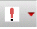
drop-down list, and choose the type of check you need to create. For example, Circuit Checks - Dynamic.
The list of dynamic checks for which templates are available in Spectre are shown in the submenu.
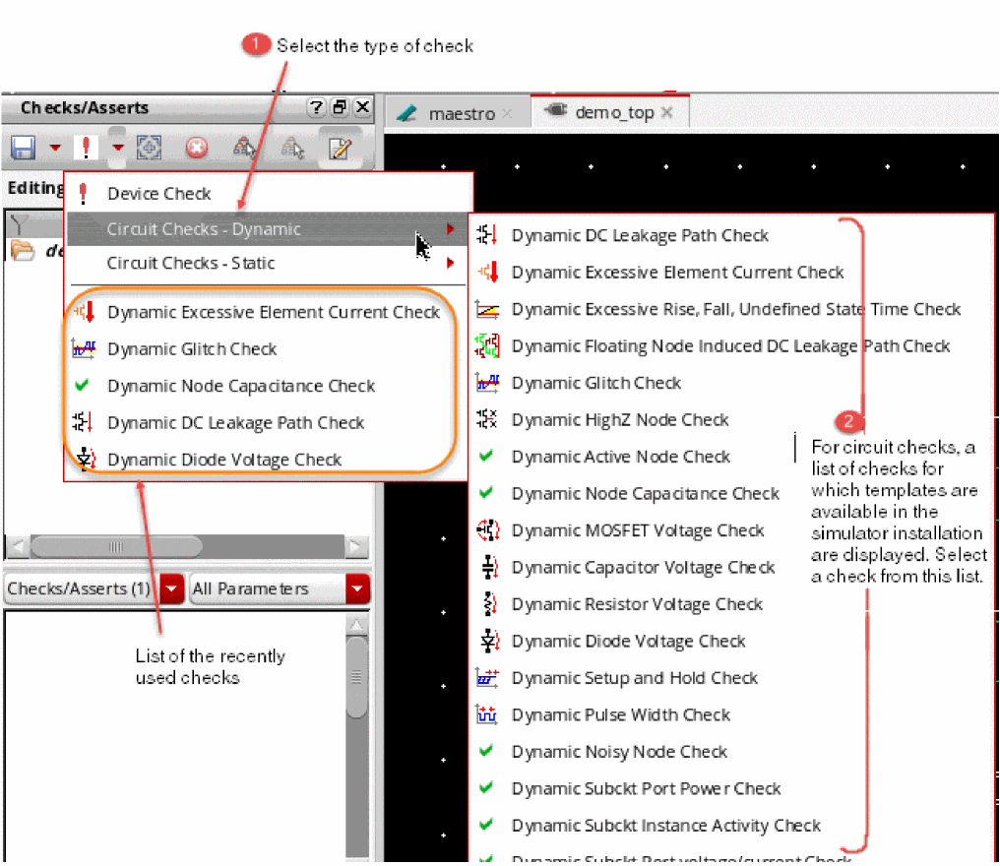The check is added to the top section of the Checks/Asserts assistant. Its corresponding parameters are displayed in the bottom section, which is also called as the Editor pane of this assistant.
There is no list of checks for Device Check. For this type of checks, you can directly provide parameters in the Editor pane. -
Move the pointer over a check name in the top area of the assistant to view its definition and parameters in a tooltip.
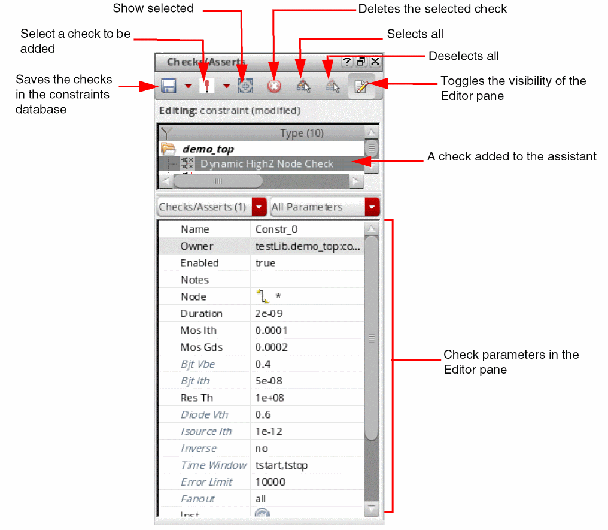 -
Edit the check parameters as required. You can define the scope for a check by setting the Node, Device, and Inst fields.
Either type the names of nodes, devices, and instances, or directly select these from the schematic.
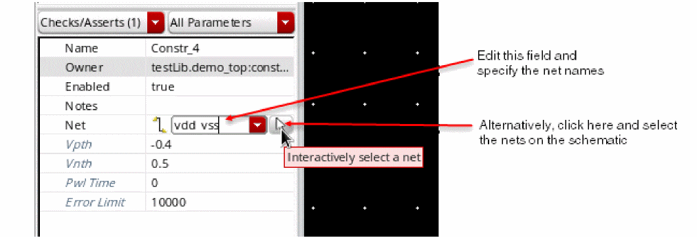To apply a check for all the nodes or instances, enter*in the respective field.
If a field value for a parameter is unchanged, it will use the default values for that parameter as defined in the simulator file. The default values can be found in two ways: - Repeat steps 1 to 3 to add more checks.
-
Click Save in the toolbar to save the checks. It is required to save the checks to ensure they are netlisted correctly. If you run simulation without saving changes in the constraints view, ADE Explorer displays a message and prompts you to save changes.The Checks/Asserts — Cellviews tree lists all the cellviews contained in the design. The numerical value next to each cellview shows the count of checks defined for each. To edit the checks for a cellview, right-click it and choose Edit Checks. The cellview is opened in the schematic view where you can add or edit checks in the Checks/Asserts assistant.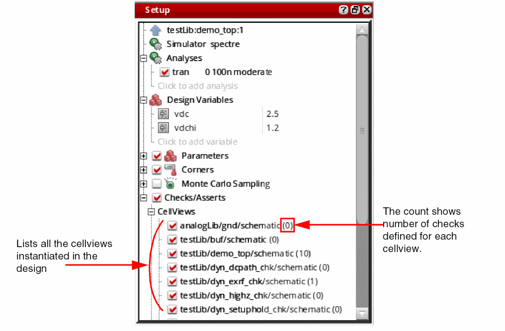An example displaying a circuit check and a device check is shown below.
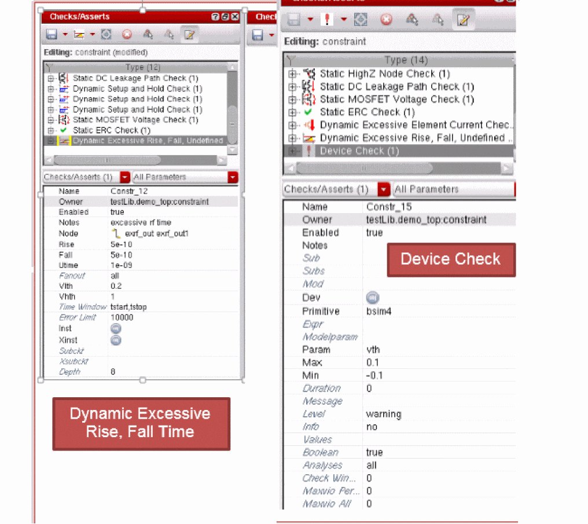The checks and asserts defined for a cell using the Checks/Asserts assistant are stored in a special partition of the constraint view for the cell. These checks will be netlisted using the subcircuit parameter to keep the scope of the check to the cellview in which it is created. These checks are included in the simulation whenever that cell is instantiated in a design.
Copying Checks or Asserts
If the check or assert you need to create for a cellview already exists for another cellview instantiated in the design, you can copy that and customize it, if required.
To copy a check or assert, perform the following steps:
-
Right-click the source cellview from which you need to copy the check or assert, and choose Edit Checks.
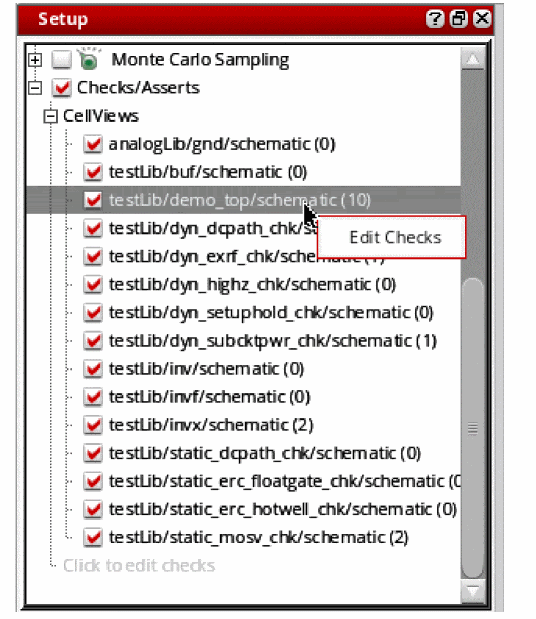The constraint view of the cellview is opened in a new tab and the checks/Asserts assistant is displayed. -
Right-click one or more checks and asserts to be copied and choose Copy Checks/Asserts from the context-sensitive menu.
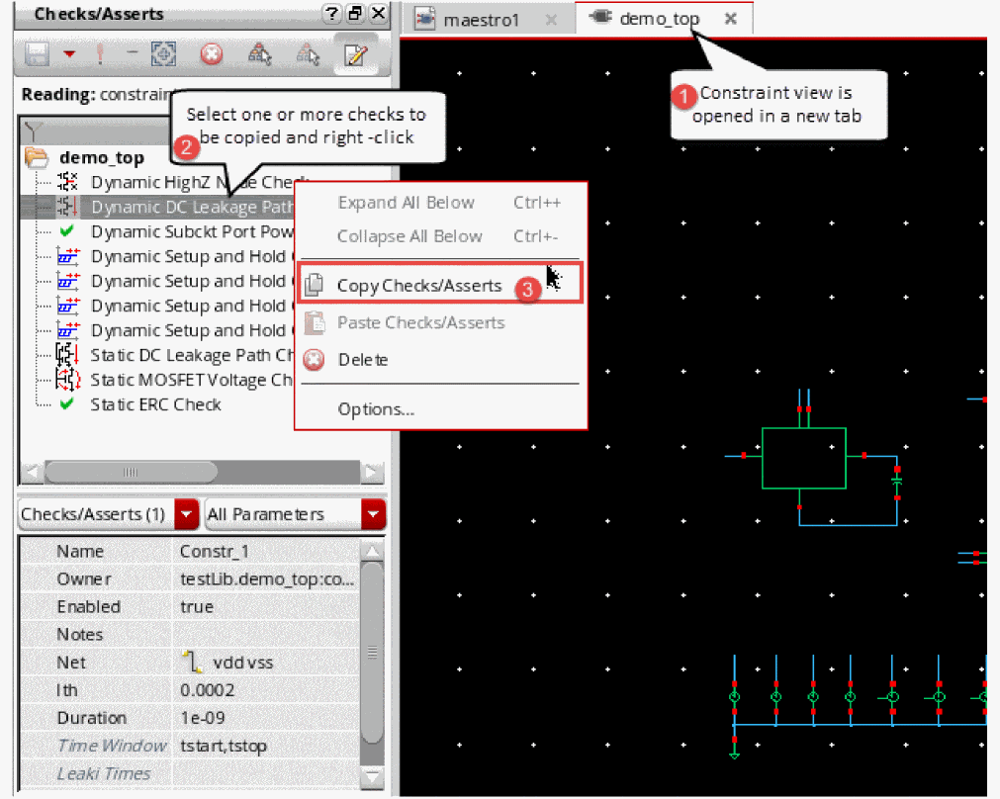The copied check or assert is saved in the memory. -
Reopen the
maestrocellview tab. - Right-click the cellview to which you need to copy or reuse the copied check or assert, and choose Edit Checks.
- The constraint view of the target cellview is also opened in a new tab and the Checks/Asserts assistant is displayed
- Ensure that the constraint view is editable. If not, click Save Checks/Asserts – Make Editable.
-
Right-click anywhere in the checks/asserts pane and choose Paste Checks/Asserts.
The copied check or assert is added to the cellview. You can view and edit its parameters in the parameter editor pane of the Checks/Asserts assistant.
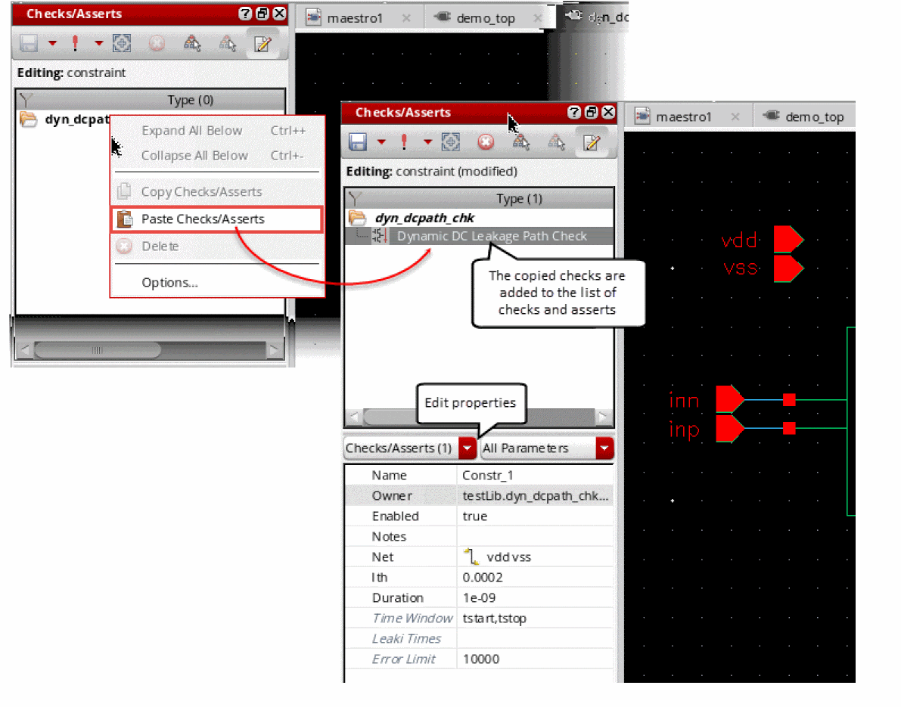
Importing Asserts from Text Files Included in the Setup
If you have defined device checks or Spectre asserts in model files, you can include those files.
To import device checks, perform the following steps:
-
Right-click the test name and choose Model Libraries.
The Model Library Setup form is displayed. -
Click
<Click here to add model file>to view the Browse button. -
Click Browse and select a model file that contains the definitions of device checks.
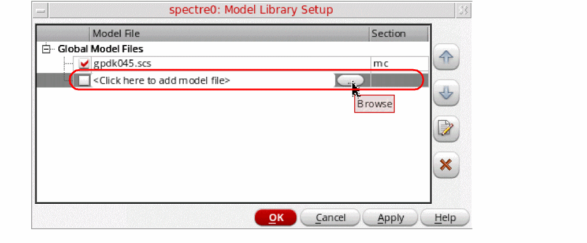 -
(Optional) If you want to view or edit the asserts, select the name of the model file and click Edit/View Selected Files.
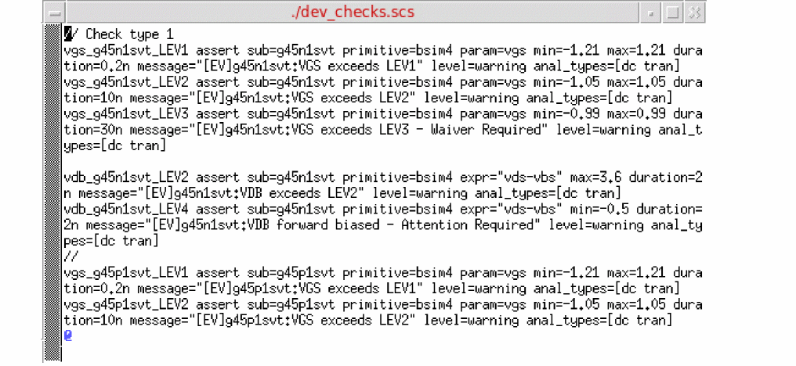 - Click OK to apply the changes and close the form.
The asserts included from the model file will now be included in the netlist and used in simulation runs.
After creating circuit checks, the next steps are to:
- Define violation filters and specifications on the Outputs Setup tab
- Run simulations
- View violations on the Results tab
Filtering Violations
Violation filters provide a way to visualize the different metrics for checks, such as the number, duration, or any user-specified categories of violations. Each violations filter can have its own specification and is treated like any other output.
To create a violation filter, perform the following steps:
-
On the Add Outputs drop-down on the Run toolbar, choose click Violation Filter to add a new output to show violation filters for checks or asserts.
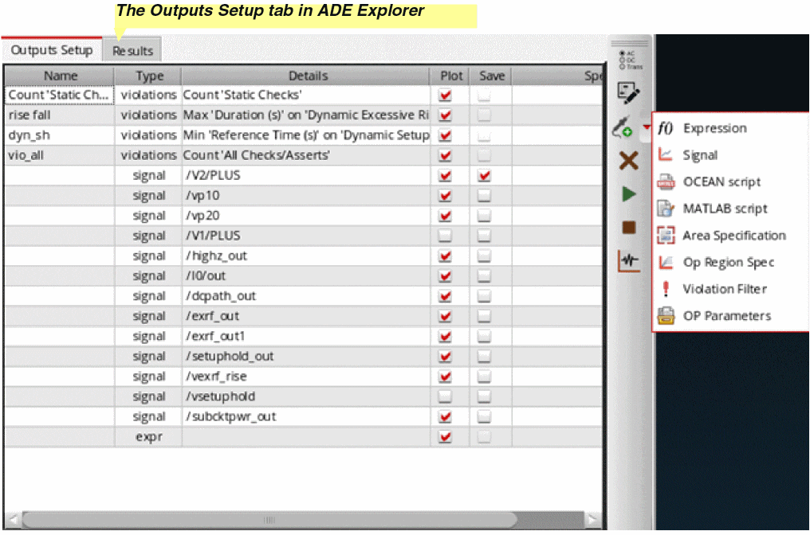A new row is created with its type set asviolations. - Enter a name in the Name column for the violation output.
-
Double-click the Details column for this row.
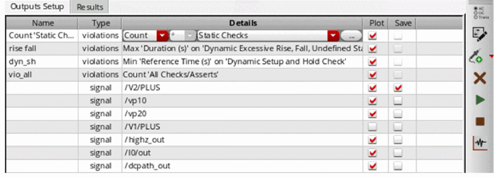The following three drop-down lists are displayed:-
The first drop-down list is the type of operation you want to perform. For example, you can select
Countto count the number of violations. Other operations available in this drop-down list areAvg,Min,Max, orSum. -
The second drop-down list specifies the field you want to access within the violation result. For example, for the Avg such as Duration or PeakValue. If the first value is
Count, the second value defaults to*. Otherwise, the choices in the second list vary depending on the item select in the third list. -
The third drop-down list shows the list of checks defined. Choose a check on which you want to run the operation selected in the first drop-down list. You can select an individual violation type, for example,
Dynamic HighZ Node Checkor a grouped category, such asDynamic ChecksorAll Checks/Asserts. The second list of fields is updated depending on the selection in this list.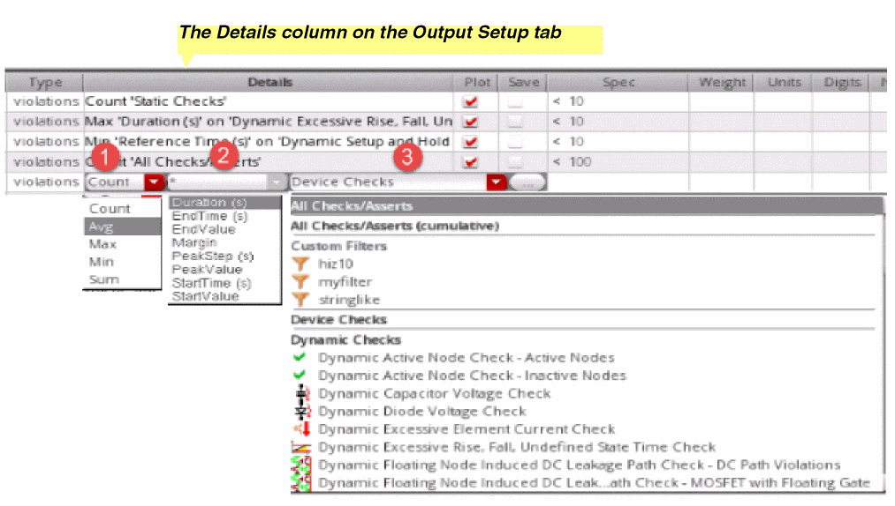
-
The first drop-down list is the type of operation you want to perform. For example, you can select
-
Select values from the drop-down lists to build an expression for the violation filter.
Example expressions: - Add a specification for the violation in the Spec column for the output.
Running Simulations and Viewing Violations
After adding checks in the Checks/Asserts assistant and defining violation filters in the Outputs Setup pane, you can run a simulation to run the checks on the simulation results. The Detail results view shows a consolidated report of the violation filter expressions defined in the Output Setup tab. For example, Count will report the number of violations of the specified type.
If no violations are found, the result for the violation filter shows No violations. When violations are reported, the status is either pass or fail.
The violation filter output value for each corner is a hyperlink. Click any value with hyperlinks to display the detailed results that contributed to this value. The net- or instance-wise details are opened in Checks/Asserts results view. With an aim to resolve violations, you can use the hyperlinks in that detailed view, find the violating nodes or instances, waive violations, and add comments.
The Checks/Asserts results view provides a lot of controls to customize the display of violation details.
When the results are displayed in the Results tab, you can perform the following tasks in the Results tab:
- View itemized violations details
- View cumulative violation details
- View summary of violations
- View instances with violations on schematic
- Create a custom violation filter
- View violation in ViVA XL graphs
- View violation reports in Web browser
For detailed information, refer to
Specifying the Global Device Check Options
You can specify the global device check options, such as start and stop times for a transient analysis and default severity for various Spectre and AMS analyses.
To open the device check options form:
-
Choose Simulation – Option – Analog.
The Simulator Options form appears. For more information about how to use this form, see Setting Spectre Options - Open the Check tab.
-
Click the Options button available at the bottom of the Check tab.
The Device Checking Options form appears, as shown in the figure below.
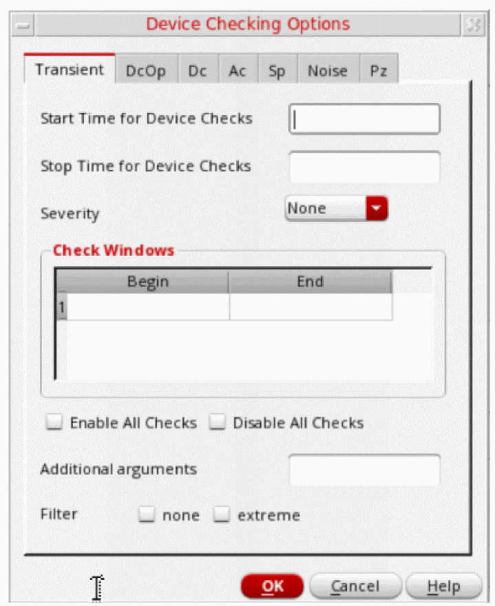
When you open this form, the Transient tab is open by default. You can also use this form to specify the global device check options for various analyses.
The following fields are displayed on the Transient tab:
- Start Time for Device Checks—Specify the beginning time at which device checks are to be enabled or disabled for transient analyses.
- Stop Time for Device Checks—Specify the end time at which device checks are to be enabled or disabled for transient analyses.
-
Severity—Select the default severity level for the message that is displayed when Spectre reports violations for the device checks that are enabled for transient analyses. The available options are:
None,Error,Warning,Notice, andFatal.
The specified severity level overrides the severity level specified for individual checks in the Checks and Asserts assistant. - Check Windows—Specify the time windows when device checks will be enabled. In the Begin and End columns, specify the begin and end times for each time window, one per line in the table.
-
Enable All Checks—Select this check box to enable all the device checks for transient analyses.
- Disable All Checks—Select this check box to disable all the device checks for transient analyses.
- Additional arguments—Sets the additional options.
-
Filter— Select extreme to report less assertion violations by omitting less severe repetitions. The available options are
noneandextreme.
The remaining tabs, DcOp, Dc, Ac, Sp, and Noise, include only three fields as shown in the figure below:
Return to top